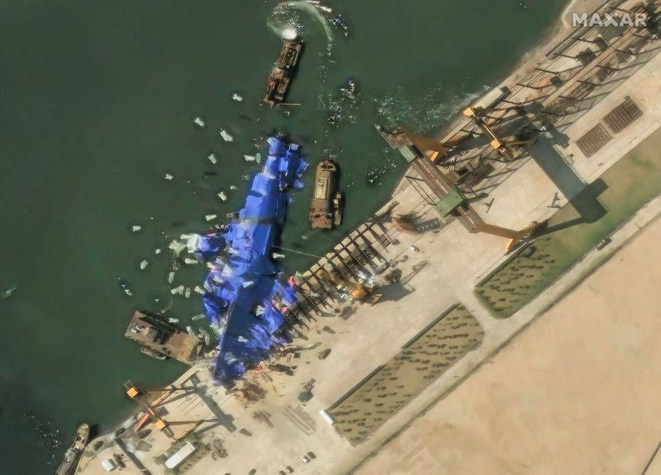

世界苦茶05月26日新闻 | 28条 | 美欧贸易战推迟到7月9日

美欧贸易战推迟到7月9日 | 中国与印尼加深合作 | 巴基斯坦加入比特币挖矿国家 | 张维为说台湾比香港更容易统治
每天三件事：
苦茶数据
美元兑人民币：7.16（昨日7.17，前日7.17）
美元兑日元：142.55（昨日142.63，前日143.48）
上证指数：3338（昨日3348，前日3379）
标普500指数：休市（昨日5802，前日5842）
比特币：109665（昨日108092，前日107828）
布伦特原油：64.97（昨日64.78，前日64.02）
中国新闻
• 李强与印尼总统会谈 ：中国总理李强与印度尼西亚总统普拉博沃会面时说，面对当前全球单边主义、保护主义上升，中国愿同印尼携手应对风险挑战，更好促进共同发展。据新华社报道，李强星期天早上在印度尼西亚总统府同普拉博沃举行会谈时，首先转达中国国家主席习近平对普拉博沃的亲切问候。李强说，中国和印尼建交75年来，双方相互支持、守望相助，传统友谊历久弥坚、弥新。中国愿同印尼坚守建交初心，弘扬友好传统，加强团结协作，夯实“五大支柱”合作格局，推动两国政治互信和战略协作迈向更高水平，携手应对风险挑战，更好促进共同发展。
• 台官员称拿五星旗不违法 ：一名在澳门读书的中国大陆学生，疑似在台湾台北展示五星旗，台湾官员据报强调在台湾拿五星旗不违法；但对于持五星旗在台湾拍照宣传一事，已请移民署加以告诫。台湾网红“八炯”温子渝上星期二在社交平台Threads上传照片显示，有五个人晚间在小巷展示五星旗，在他们的旁边是一家小吃店。八炯也写道：“其他相关照片，我早上就丢给移民署了。”台湾《自由时报》引述知情官员报道，几个拿五星旗拍照的人，是在澳门念书的中国大陆留学生，这次是赴台湾听演唱会。
• 学者称统一台湾更易治 ：复旦大学中国研究院院长张维为称，随着小红书等中国大陆社交平台在台湾年轻人间日益流行，他认为“台湾统一之后，治理台湾会比治理香港还要容易”。张维为星期三在微博上传一段视频，内容是他5月16日在武汉大学回应一名学生就台湾议题提问时的发言。张维为表示，他认为目前解决台湾问题的时机已越来越成熟，“说不定哪天你一醒来已经解放了”。张维为回忆起此前在马来西亚演讲时，当地华人问道当前台湾选举只会选出“台独”，但他称：“我当时就笑了，我说你有没有想过另外一个问题，台湾没有下一次大选了”，因为“万事俱备了”。
• 韩华人遭遇反华骚扰 ：随着韩国总统大选的临近，许多在韩中国公民和华人正深陷日益高涨的反华情绪中，仇恨言论在社交媒体上蔓延，街头骚扰事件频频发生。综合香港《南华早报》、韩国《中央日报》和韩联社报道，一名在首尔经营餐厅的中国公民说，自上个月中旬以来，他开始在外卖平台上看到逾百条针对餐厅的恶意留言，其中不乏“滚回你的国家”等带有敌意的言论。另一名在首尔经营中餐馆的女性也说，上个月她所居住的华人聚居区附近，爆发了一场由极右翼团体发起的抗议活动，示威者向当地居民高喊“滚回中国”的口号，言语中还夹杂着种族歧视的内容。
亚太印太新闻
• 台军将重启军事审判 ：台湾军方人士透露，恢复军事审判制度的初步修法草案预计将于今年8月提出。台湾总统赖清德今年3月主持国安高层会议时提出重启军事审判制度，行政院长卓荣泰当时曾说会在一个月内提出恢复军事审判制度等法案，但至今外界一直不清楚相关修法内容及具体实施时间表。综合台湾《联合报》《中国时报》报道，防长顾立雄星期五出席最高检察署与国防部法律事务司合办的新书《军法三策》发表会时说，重启军事审判是一项艰巨任务，国防部已就此议题拜会法务部及最高检察署，感受到司法体系对此高度重视。
• 日本男子间谍罪获刑12年 ：因间谍罪在中国被判处12年监禁的日本籍男子未提出上诉。综合日本共同社和《产经新闻》报道，日本驻上海总领事馆星期五透露，这名50多岁的日本男子被判12年有期徒刑，刑期将正式生效。总领事馆透露，该男子于2021年12月在上海被拘留，2023年8月因危害国家安全罪被起诉，并于本月13日被判有罪。起诉内容及判决细节尚未公开。
• 朝鲜驱逐舰事故三人被捕 ：朝鲜新型驱逐舰下水事故，当地司法机构已拘留三名涉事人员，将展开法律调查。朝中社报道，被拘留的三人是咸镜北道清津造船厂总工程师姜正哲、船体建造车间负责人韩京学，以及行政事务副厂长金勇鹤，当局指这三人对这起事件负有责任。美国和首尔情报部门早前评估认为，朝鲜“侧向发射”驱逐舰的尝试失败，舰体在水中倾斜。
科技新闻
• 意国铁或测试星链服务 ：意大利国家铁路公司表示，可能会在未来的项目中测试埃隆·马斯克的“星链”卫星互联网服务。意大利国家铁路公司代表周六在声明中表示，目前正在评估和分析在集团旗下公司项目中测试星链服务的可能性。此前，意大利副总理马泰奥·萨尔维尼当天早些时候表示，意大利国家铁路公司正在评估星链和另一家未具名的提供商作为其列车上互联网服务的可能供应商。意大利国家铁路公司在声明中说：“集团正在投资加强列车连通性的项目，旨在改善整体火车旅行体验。集团委托的列车上Wi-Fi服务供应商之一是 Icomera公司，该公司已将星链集成到其系统中。”
• 巴基斯坦推进加密能源计划 ：巴基斯坦在全国支持比特币挖矿和人工智能数据中心的第一阶段计划中，已分配2000兆瓦电力装机容量。目前该国正推动加密货币合法化并以此吸引外国投资。巴基斯坦财政部在声明中表示，这项由巴基斯坦加密货币委员会主导的计划，还将有助于实现剩余能源的货币化，并创造高科技就业岗位。财政部称，萨希瓦尔、中国枢纽和卡西姆港等目前仅以 15%产能运行的燃煤发电项目，预计将被改用于这一计划。巴基斯坦联邦政府正寻求投资以提振经济，该国在2023年勉强避免了债务违约。该国拥有约1500万至2000万加密货币用户，其目标是建立监管框架，以壮大本地加密生态系统并吸引全球资本。 （翻评：此前一个发动国家机器希望通过比特币解决财政问题的是朝鲜，巴基斯坦已经混到这个地步了。）
• 甲骨文购40万块英伟达芯片 ：甲骨文将斥资约 400亿美元购买英伟达高性能计算芯片，为OpenAI在美国新建的巨型数据中心提供动力。位于得克萨斯阿比林的数据中心被称为美国首个星际之门项目，这项由OpenAI和软银牵头、总投资高达五千亿美元的数据中心计划，预计将于明年完工，届时将提供 1.2 吉瓦的电力，成为全球最大的数据中心之一。据多位知情人士透露，甲骨文将购买大约40万块英伟达的GB200芯片并将计算能力租赁给OpenAI。该基地的所有者克鲁索公司和美国投资公司蓝鸮资本已经筹集了 150亿美元的债务和股权资金，用于资助阿比林项目，该项目将包括八栋建筑。
• 英伟达将推中国新AI芯片 ：美国晶片巨头英伟达据报将为中国市场推出一款基于Blackwell架构的人工智能晶片，售价将大幅低于先前的H20晶片，预计最快于6月开始量产。路透社星期六引述知情人士说，这款采用最新一代Blackwell架构的AI处理器，预计售价介于6500至8000美元，明显低于H20晶片每块1万至1万2000美元的定价。较低的售价反映该晶片规格相对较弱，制造工艺也更为简化。
财经新闻
• 特朗普把对欧盟征收50%关税的日期推迟至7月9日： 美国总统特朗普周日表示，美国将把对欧盟征收关税的日期推迟至7月9日，从而暂缓他此前的威胁。特朗普此前表示要对这个由27个国家组成的联盟征收50%的关税，原定于6月1日生效。特朗普在一篇社交媒体帖子中表示，他接到了欧盟委员会主席冯德莱恩请求延期的电话。他写道：“我很荣幸这么做。”“她说我们将很快会面，看看能否商量出解决办法，”特朗普对一群记者表示。
• 欧洲央行将实现通胀目标 ：欧洲央行副行长德金多斯表示，该行未来几个月将实现消费者价格增长目标。彭博社报道，德金多斯星期四在马德里的一场活动上表示：“我们认为，我们会相对较快地落实我们对价格稳定的定义，即以稳定、对称的方式实现2%目标……这是个好消息。”他表示，有助于抑制物价的因素包括下降的能源成本和强劲的欧元。欧元区4月通胀率为2.2%。
• 中方批准向韩出口稀土 ：据韩国政府和业界25日消息，中国商务部本月批准向多数韩企出口稀土产品。这是中国政府上月4日对7种稀土实施出口管制后，中方对韩出口稀土案例首次得到确认。美国政府上月二日宣布将对华输美商品征收34%的对等关税。中方两天后就采取反制措施，宣布对美国商品征收34%关税，并对七类中重稀土相关物项实施出口管制。七种中重稀土金属元素分别为钐、钆、铽、镝、镥、钪和钇。中方宣布实施上述管制措施后，韩国政府通过热线与中方保持沟通，敦促中方加快对韩稀土出口许可的审批进度，以最大程度降低出口管制对韩国企业可能面临的损失。
• 港投资入境计划超千宗 ：香港官方公布，新资本投资者入境计划推出后，投资推广署截至今年4月底共收到超过1200份申请。所有申请预计将为香港带来逾370亿港元的投资金额。根据港府新闻公报网站星期天发布的信息，截至2025年4月底投资推广署共接获1257宗申请，同期入境事务处已向911名申请人发出“原则上批准”，让申请人以访客身份入境香港以便完成投资，并已向512名完成投资的申请人发出“正式批准”。这项计划去年3月推出，今年3月进行优化，其中包括将符合净资产规定的时间从两年缩短至六个月，以及让申请人透过全资拥有的合资格私人公司进行投资，与家族办公室的税务宽减制度产生协同效应。
• 华为推首款鸿蒙电脑 ：中国科技巨头华为的首款鸿蒙电脑，据报搭载了五纳米工艺的晶片。中国央视《新闻周刊》星期天报道称，华为历经五年研发的首款鸿蒙个人电脑，标志着中国大陆拥有从系统内核到应用生态全链路自主可控的电脑操作系统。报道称，鸿蒙电脑搭载五纳米工艺麒麟X90晶片，并实现与鸿蒙系统的深度协同。
• 太盟收购万达48商场 ：中国官方据报批准了由太盟牵头的投资者收购大连万达商业管理集团旗下48家购物中心。中国国家市场监督管理总局星期二在一则公告中列出了参与上述交易投资方，包括腾讯控股有限公司、阳光人寿保险股份有限公司，以及一家由京东支持的投资载体。但公告未披露更多细节。彭博社星期五引述知情人士透露，这笔交易将通过一只规模为500亿元人民币的基金完成。太盟计划向该基金的次级份额投资约50亿元，银行贷款部分约为300亿元，其余资金将通过夹层融资方式由其他投资者提供。
• 日本首相石破茂希望与美关税谈判在G7峰会期间取得成果 ：日本首相石破茂周日表示，东京希望推进与美国的关税谈判，目标是在下个月的七国集团峰会期间取得成果。日本最高关税谈判代表赤泽亮正周五在华盛顿参加了第三轮日美会谈。石破茂表示谈判已经取得了进展，并提到关于贸易扩张、非关税措施和经济安全的讨论。石破茂表示日本愿意在造船方面进行合作。赤泽亮正表示，下一轮日美谈判的日程仍在安排之中，他希望在他的下次访问中与美国财长贝森特会面。
• 建商降价推动美国新屋销售意外增加，抵押贷款利率上升令前景黯淡 ：美国4月新屋销售急升至逾三年来的最高水平，建筑商降低价格以吸引买家，但抵押贷款利率上升和经济不确定性仍是楼市面临的不利因素。美国商务部统计局表示，4月新屋销售环比急升10.9%，经季节性因素调整后的年率为74.3万户，为2022年2月以来最多，预估为减少至69.3万户。销售同比增加3.3%。库存减少0.6%，至50.4万户。按照4月的销售速度，需要8.1个月售罄市场上的供应。
俄乌战争
• 特朗普政府终于对俄罗斯大规模袭击乌克兰作出回应： 凯洛格发布了一张基辅熊熊大火的照片，并表示此类袭击“明显违反了1977年《日内瓦和平议定书》”。“这里是基辅。夜间在家中滥杀妇女和儿童，明显违反了旨在保护无辜者的1977年《日内瓦和平议定书》。”凯洛格指出，俄罗斯最近的袭击只会凸显双方停火的必要性。“这些袭击令人发指。停止杀戮。立即停火，”他补充道。
• 乌克兰对外情报局局长称，中国正向俄罗斯军工厂供应化学品、火药和零部件： 乌克兰对外情报局局长奥列格·伊瓦申科在5月25日部分披露的采访中表示，北京正在向20家俄罗斯军工制造工厂供应“特种化学品、火药和零部件”。“我们已经确认了20家俄罗斯工厂的数据，”他在一段尚未公布的采访片段中告诉乌克兰信息通讯社。自克里姆林宫对乌克兰发动全面战争以来，中国加强了与俄罗斯的关系，成为莫斯科军民两用产品的主要供应国，这些产品增强了俄罗斯的国防工业。
• 俄罗斯对乌克兰发动最大规模空袭后，特朗普称普京“疯了”： 美国总统唐纳德·特朗普表示，他对俄罗斯总统弗拉基米尔·普京“不满意”，此前莫斯科对乌克兰发动了迄今为止最大规模的空袭。特朗普罕见地斥责道：“他到底怎么了？他杀了很多人。” 随后他又称普京“绝对疯了”。乌克兰总统弗拉基米尔·泽连斯基早些时候表示，华盛顿对俄罗斯近期袭击的“沉默”鼓舞了普京，并敦促对莫斯科施加“强大压力”，包括更严厉的制裁。周日夜间，俄罗斯在乌克兰发射了367架无人机和导弹，造成至少12人死亡，数十人受伤。这是自2022年普京发动全面入侵以来，单夜发射次数最多的一次。周一凌晨，乌克兰许多地区再次响起警告无人机和导弹来袭的警报。
• 俄乌完成千人换俘计划 ：俄罗斯与乌克兰5月23日至25日完成此前商定的“千人”换俘计划。这也是上次直接会谈中唯一有型的成果。乌克兰方面称，俄罗斯24日晚至25日凌晨再次用69枚各型导弹、298架无人机袭击乌克兰基辅等30余座城市和村庄，造成至少12人死亡、59人受伤。俄罗斯方面说，24日夜至25日晨，俄多地共击落205架乌克兰无人机。莫斯科的4个机场以及卡卢加州1个机场因安全问题数次启动临时航空管制。在前线，俄罗斯“北部”集群表示，俄军过去一周占领了苏梅州两个居民点，并在哈尔科夫州沃尔昌斯克市推进。
其他新闻
• 以军袭击致九童死亡 ：加沙民防机构说，以色列袭击加沙南部城市汗尤尼斯，造成一对医生夫妇的九名子女死亡。以军称正在审查相关报告。法新社报道，加沙民防发言人巴萨尔星期六说，纳贾尔医生的住家星期五遭到袭击，当局在住家内找到九名儿童的遗体。纳贾尔和另一名10岁的儿子亚当也在袭击中受重伤。
• 美给予叙180天制裁豁免 ：美国财政部5月23日宣布与国务院共同行动，给予叙利亚为期180天的制裁豁免，以放松针对该国的金融活动限制，从而让叙临时当局有机会重建国家。根据豁免授权，原本在美对叙经济制裁下被禁止的商业行为，包括对叙新投资、向叙提供金融和其他服务、以及与叙原产石油或石油产品相关交易等活动，已暂获许可。美金融机构也获准为叙利亚商业银行开设代理账户。财政部称，延长制裁豁免的条件是叙临时当局不得为恐怖组织提供庇护，并确保该国少数民族和各宗教派别安全。
• 美投资者绑架意男子 ：美国一名加密货币投资者涉嫌在纽约曼哈顿一栋豪宅内，绑架并折磨一名意大利男子达三周，试图逼迫其交出比特币密码。《纽约时报》报道，曼哈顿检察官办公室指出，涉案者为37岁的沃尔茨，他与另一名尚未落网的男子将受害人非法囚禁另一名28岁意大利男子，其间还不断殴打、电击、持枪威胁受害者。沃尔茨已于本月24日在曼哈顿刑事法院被控绑架、非法监禁、袭击及非法持有枪械，法院下令其不得保释，并要求交出护照。另一名被捕者福尔基则被控绑架及非法监禁。目前尚不清楚两名嫌疑人与受害者的关系。
• 特朗普为哈佛禁令辩护 ：美国法院紧急叫停政府针对哈佛大学的“国际学生禁令”，但美国总统特朗普为这项政策辩护。法新社报道，特朗普星期天在社交媒体Truth Social发文说：“为什么哈佛大学不承认近31%的学生来自外国？其中一些国家对美国并不友好，却不支付学生的教育费用，而且他们也从未打算支付。”他也说：“我们想知道这些外国学生是谁，这是一个合理的要求，因为我们给了哈佛大学数十亿美元，但哈佛大学却迟迟不肯透露。”
• 法德士司机抗议交通瘫痪 ：法国德士司机抗议活动瘫痪当地交通系统，法国总理贝鲁将重新审视一项拟议的改革方案。法新社报道，贝鲁星期六与德士联合会代表会谈后告诉记者：“我们将在未来几周内制定需要采取的具体决定、措施和方向，会有节省开支的办法。”过去一周，法国德士司机在全国各地封锁道路，与政府就病人接送费用展开日益激烈的对峙。星期六早些时候，德士司机更威胁要进一步封锁道路，包括封锁巴黎机场和星期天将举行的法网公开赛首轮比赛。